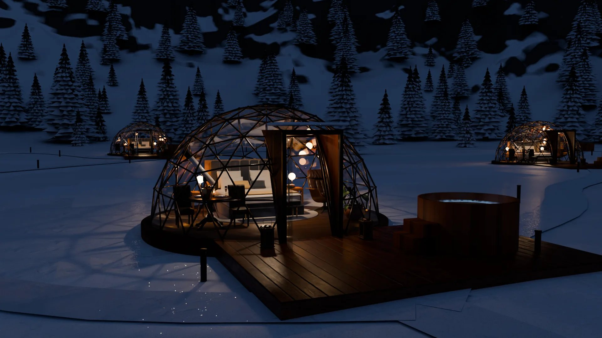
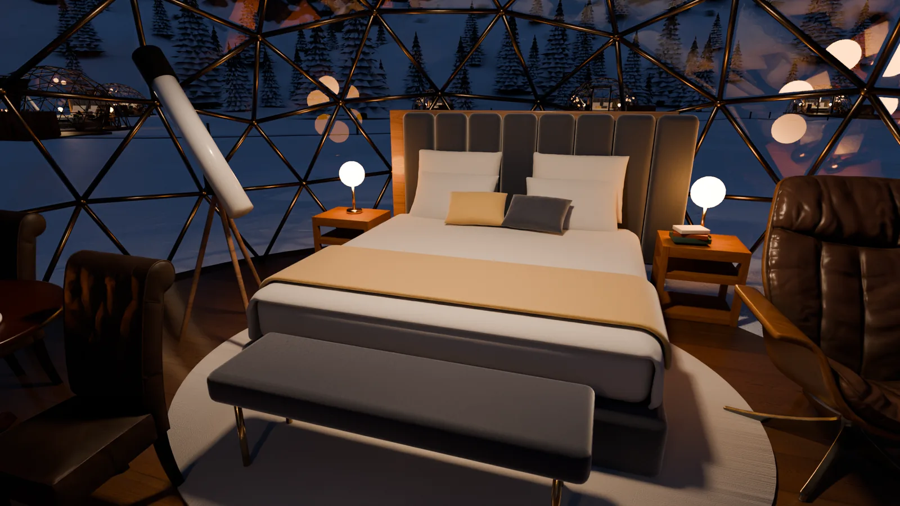
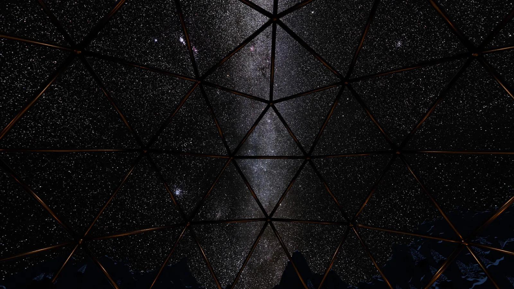
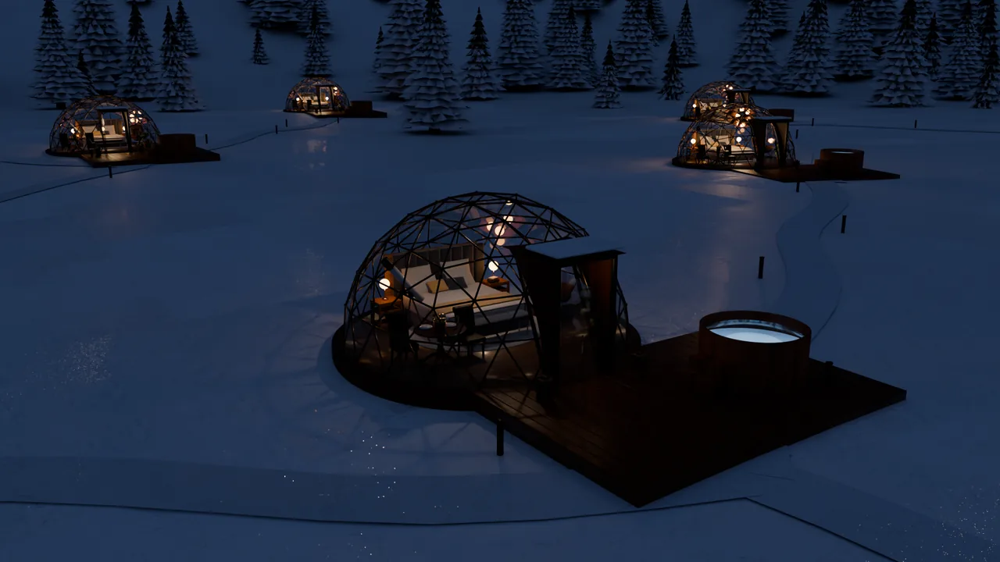
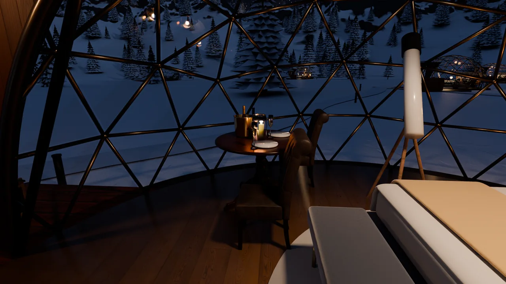

Domos de cristal para parejas en Andorra
Solo vosotros dos, la Vía Láctea encima y nadie más alrededor. La noche que contaréis durante años.
Solo adultos. Cielo certificado Starlight. Os recogemos en Barcelona.
Desliza para entrar

KURA

Domos de cristal para parejas en Andorra
Solo vosotros dos, la Vía Láctea encima y nadie más alrededor. La noche que contaréis durante años.
Solo adultos. Cielo certificado Starlight. Os recogemos en Barcelona.
Desliza para entrar
Solo adultos, y cada domo a 30 metros del siguiente, entre pinos. Por la noche solo se oye la montaña.
Fuera, la nieve a −5 °C. Dentro, 22 °C y una cama king calefactada. Y cuando volvéis de esquiar, el jacuzzi ya está caliente.
Para el aniversario, para la pedida o para celebrar que seguís juntos. Cenáis dentro del domo a la luz de una vela, y del resto nos ocupamos nosotros.
Alojar a parejas amantes del esquí y de las estrellas en las montañas andorranas, en un ambiente privado, lujoso y ligado a una experiencia memorable.
Convertir Andorra en un destino reconocido para el astroturismo y el esquí en el sector del lujo europeo.



De diciembre a marzo
Esquiáis sin colas, con forfait VIP en Grandvalira y traslado a pistas. Al volver, el jacuzzi ya está caliente y la noche entera es para mirar arriba.

De junio a septiembre
En agosto el cielo se llena de estrellas fugaces. Un astrónomo os guía con el telescopio y os lleváis la foto del cielo que nadie más tiene.
Un aniversario, una pedida o dos noches de esquí y estrellas. Lo preparamos a vuestra medida.
Un chófer os espera en Barcelona o Toulouse. En menos de 3 horas estáis en el domo.
Cena, jacuzzi, astrónomo y concierge a cualquier hora. Vosotros solo tenéis que mirar arriba.
En invierno y en fechas señaladas. En primavera, en otoño y entre semana en verano, de 550 a 750 €.
Incluido en cada noche
La cena con chef, el forfait y los packs se reservan aparte.
Para esquiar sin colas de día y mirar arriba de noche: dos noches con forfait VIP en Grandvalira.
Para que el momento salga perfecto: cena con chef en el domo, pack romántico y un fotógrafo que lo guarda.
Para ver caer estrellas con un astrónomo al lado y llevaros la foto del cielo.
Si el cielo no se abre, os cambiamos la noche por otra fecha o por otra experiencia.
Si vuestros planes cambian, movemos la fecha sin penalizaciones sorpresa.
Os recogemos en Barcelona o Toulouse y os dejamos en la puerta del domo. No tenéis que conducir.
Una noche para el esquí o la ruta, otra solo para el cielo.